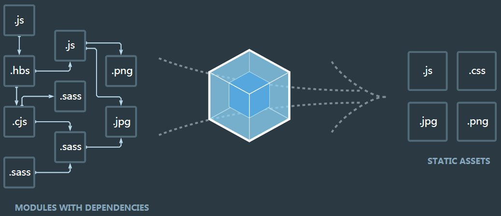
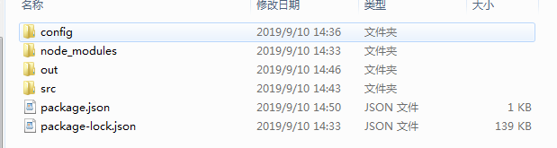
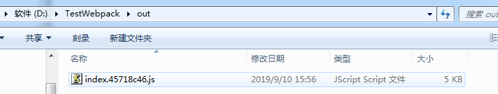

前端经过漫长的发展，涌现出了很多实践方法来处理复杂的工作流程，让开发变得更加简便，其中，模块化可以使复杂的程序细化成为各个小的文件，而webpack并不强制你使用某种模块化方案，而是通过兼容所有模块化方案让你无痛接入项目，本文详细介绍webpack安装配置及打包的详细过程。
本质上，webpack 是一个现代 JavaScript 应用程序的静态模块打包器(module bundler)。当 webpack 处理应用程序时，它会递归地构建一个依赖关系图(dependency graph)，其中包含应用程序需要的每个模块，然后将所有这些模块打包成一个或多个 bundle。
其中包含四个核心概念
./dist通过官网的一张图，可以说明webpack的强大，如下所示：

接下来详细介绍webpack安装配置及打包的详细过程
可以参考上篇博客Node.js安装详细步骤教程(Windows),这里不再重复书写。
运行CMD，安装命令如下所示，其中， -g是全局安装，并移除安装了 webpack和webpack-cli
npm install webpack webpack-cli –g创建项目本地文件夹，如“D:\TestWebpack”，在CMD命令窗中分别输入如下命令，切换到该目录
D: //切换到D盘
cd D:\TestWebpack //切换到项目目录输入如下命令，在项目目录中安装webpack，其中，--save-dev是本地安装
npm install webpack webpack-cli --save-dev输入如下命令，若出现版本号，说明安装成功。
webpack -v输入如下命令，将在项目目录中自动生成package.json文件
npm init -y在项目目录下，新建config文件夹，用于存放配置文件；src文件夹，用于存放源码；out文件夹，用于存放打包生成文件，具体如下图所示。

在config文件夹中添加webpack.config.js文件，并添加如下代码：
const path=require('path'); //调用node.js中的路径
module.exports={
entry:{
index:'./src/js/index.js' //需要打包的文件
},
output:{
filename:'[name].js', //输入的文件名是什么，生成的文件名也是什么
path:path.resolve(__dirname,'../out') //指定生成的文件目录
},
mode:"development" //开发模式，没有对js等文件压缩，默认生成的是压缩文件
}在cmd命令窗体中，输入如下命令，运行成功后，在out目录中会生成打包后的index.js
webpack --config config/webpack.config.js每次输入命令webpack --config config/webpack.config.js，太长，且非常不方便，此时我们可以在package.json文件中配置，如下所示：
{
"name": "TestWebpack",
"version": "1.0.0",
"description": "",
"main": "index.js",
"scripts": {
"test": "echo \"Error: no test specified\" && exit 1",
"start": "webpack --config config/webpack.config.js"
},
"keywords": [],
"author": "",
"license": "ISC",
"devDependencies": {
"clean-webpack-plugin": "^3.0.0",
"webpack": "^4.39.3",
"webpack-cli": "^3.3.8"
}
}配置完成后，我们输入的如下命令，可以直接打包。
npm run start通过哈希值解决JS缓存问题(在没有修改JS要打包的内容时，不会重新打包一个JS文件)，修改webpack.config.js文件，具体代码如下：
const path=require('path');
module.exports={
entry:{
index:'./src/js/index.js'
},
output:{
filename:'[name].[chunkhash:8].js',//增加8位的哈希值
path:path.resolve(__dirname,'../out')
},
mode:"development",
}通过clean-webpack-plugin插件删除输出目中之前旧的文件。
npm install --save-dev clean-webpack-pluginconst path=require('path');
const {CleanWebpackPlugin} = require('clean-webpack-plugin');
module.exports={
entry:{
index:'./src/js/index.js'
},
output:{
filename:'[name].[chunkhash:8].js',
path:path.resolve(__dirname,'../out')
},
mode:"development",
plugins:[
new CleanWebpackPlugin()
]
}const path=require('path');
const CleanWebpackPlugin = require('clean-webpack-plugin').CleanWebpackPlugin ;
module.exports={
entry:{
index:'./src/js/index.js'
},
output:{
filename:'[name].[chunkhash:8].js',
path:path.resolve(__dirname,'../out')
},
mode:"development",
plugins:[
new CleanWebpackPlugin()
]
}配置完后，我们再次运行npm run start，此时out目录中，只有一个新生成的js文件，如下图所示。

至此，我们完成从webpack安装、配置、打包等一系列步骤。以上详细步骤，全部经过笔者测试通过，如果在安装或使用过程中出现问题，欢迎留言交流，如果本文对你有所帮助，希望关注支持下。